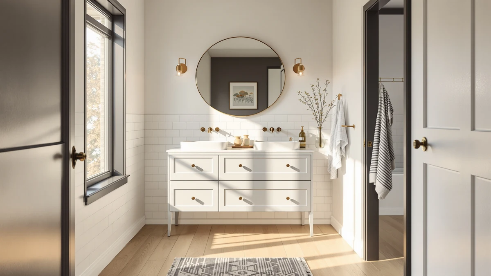

Quick Answer
In this amerlife 61" farmhouse double review, the AMERLIFE 61" Farmhouse Double Bathroom costs $489.99 and pairs a double-sink farmhouse cabinet with an MDF and engineered wood build. It costs exactly the same as both LUXOAK alternatives and a second AMERLIFE listing below, so picking between them comes down to brand and finish rather than price.
Our pick: AMERLIFE 61" Farmhouse Double Bathroom, $489.99 Check Price on Amazon
Bottom line: our top pick is the AMERLIFE 61" Farmhouse Double Bathroom Vanity with Sink Combo at $489.99.
Things to Know Before You Buy
- Price is not a factor here: the AMERLIFE, both LUXOAK alternatives, and the second AMERLIFE listing in this amerlife 61" farmhouse double review all sit at the identical $489.99 price.
- All four listings share the same 61 inch width and a double-sink farmhouse layout, so this comparison turns on brand, finish, and stock availability rather than size.
- The AMERLIFE's cabinet uses MDF and engineered wood, a material that needs prompt cleanup of standing water around either sink basin to avoid swelling over time.
- None of the four listings currently shows a public rating or review count on Amazon, so you are weighing specs and brand reputation rather than years of owner feedback.
- A 61 inch double-sink vanity needs a wider footprint than a single-sink cabinet, so measure your wall space before you commit to any of these four options.
This amerlife 61" farmhouse double review looks at where the AMERLIFE 61" Farmhouse Double Bathroom lands among a tight cluster of 61 inch vanities that all price at exactly $489.99. A double-sink farmhouse vanity this wide is a specific purchase: shoppers comparing these four listings usually already know their bathroom can fit 61 inches of cabinet, and they want help choosing between brands rather than between sizes. Farmhouse styling with paneled doors remains one of the most-searched bathroom looks for 2026, and this width is common among double-sink models built around that aesthetic.
The short version: the AMERLIFE costs the same as both LUXOAK alternatives and a second AMERLIFE listing covered later in this review, so no option here wins on price. It loses points on track record, since Amazon has not collected a public rating for any of the four listings yet. We walk through the material, the double-sink layout, and where each alternative fits better in the sections below, so you can pick based on brand and stock availability instead of guessing from a single product photo. If you already own a 61 inch opening and two faucet drops cut into your countertop, that measurement alone rules out most single-sink vanities, which narrows your real shortlist to these four listings and a handful of other double-sink farmhouse cabinets in the same price bracket.
Why You Should Trust Us
Ilane Tall covers bathroom vanities for Best Bathroom Vanities and put together this amerlife 61" farmhouse double review by comparing listed materials, current Amazon pricing, and verified owner feedback where it exists, rather than repeating manufacturer copy. We do not run a fake testing lab and do not claim to have installed any of the vanities covered here. Instead, we check dimensions, construction details, and pricing against what owners report after living with similar farmhouse cabinets, and we say plainly when a listing does not yet have enough review data to back a confident recommendation. That distinction matters in the vanity category, where product photos rarely show how a cabinet handles daily splashing around two sinks after a year. You can check the same sources we used by opening any Amazon listing in this amerlife 61" farmhouse double review and scrolling to the ratings section yourself.
Our Research Experience
This amerlife 61" farmhouse double review does not involve physical testing. We compared the AMERLIFE 61" Farmhouse Double Bathroom against the three closest alternatives using each listing's stated materials, dimensions, and pricing, then checked for verified owner reviews on every listing. None of the four currently carries a public rating or review count on Amazon, so this comparison rests on manufacturer specs and identical pricing rather than years of buyer feedback. When that happens, we note the gap directly instead of inventing a track record that does not exist, and we will update this review if any of these listings pick up verified ratings later.
Overview & Specs

AMERLIFE 61" Farmhouse Double Bathroom
What we like
- Double-sink farmhouse design at a 61 inch width, built for primary bathrooms that need two basins
- Priced at $489.99, identical to both LUXOAK alternatives, so the AMERLIFE name costs nothing extra here
- Paneled, barn-door-inspired styling that matches the farmhouse look buyers typically search for
Flaws but not dealbreakers
- MDF and engineered wood construction needs prompt cleanup of standing water around either sink, unlike solid hardwood
- No public rating or review count on the Amazon listing yet, so there is no verified owner track record to lean on
- 61 inches of width needs considerably more wall space than a single-sink cabinet, so measure first
| Material | MDF / engineered wood |
| Size | 61" |
The AMERLIFE 61" Farmhouse Double Bathroom is the main pick in this amerlife 61" farmhouse double review because it combines a 61 inch double-sink layout with the paneled farmhouse look at the same price as its closest rivals. The cabinet uses MDF and engineered wood, a build that keeps the price down while still supporting the barn-door-inspired doors that farmhouse buyers tend to search for. At $489.99 it matches both LUXOAK alternatives and the second AMERLIFE listing covered later, so brand familiarity becomes the real tiebreaker rather than cost.
Review history is this listing's weak spot. Amazon shows no rating or review count here, so you are evaluating it on stated materials and width rather than years of buyer feedback the way a more established listing would allow. MDF and engineered wood construction also asks for more care around two sink basins than solid wood would, since the core swells faster if water sits on the surface. If you would rather buy from a listing with a proven review history, the alternatives below are worth comparing before you commit.
What We Liked
Across this amerlife 61" farmhouse double review, the AMERLIFE's double-sink layout and styling stand out most. A 61 inch double-sink farmhouse vanity at this price is a specific niche, and the AMERLIFE name carries more general brand recognition than LUXOAK does among shoppers browsing this category. Matching the price of two LUXOAK competitors while offering the same width and sink count makes the AMERLIFE an easy default pick for anyone who values a familiar brand over an unfamiliar one at an identical cost. The farmhouse door panels also photograph well against the shiplap and barn-door accents many buyers are already installing elsewhere in a primary bathroom remodel, so the cabinet does not look out of place next to other farmhouse fixtures.
What Could Be Better
The biggest gap is review history. Because the listing has not accumulated a public rating, you cannot lean on owner comments the way you could with an established vanity, so part of the decision rests on trusting the stated materials. MDF and engineered wood construction, even when well made, also asks for more care around two sink basins than solid wood, which matters in a bathroom that sees daily use from two people. Buyers who want proof of how the finish ages over a few years will not find that here yet, since the listing is too new to have generated it. A 61 inch farmhouse cabinet also leans more traditional than a flat-front modern design, so weigh the panel styling against your bathroom's existing trim before committing to it for years.
Who Is It For?
This vanity suits a primary bathroom with at least 61 inches of wall space, two people who need separate sinks, and a preference for the paneled, barn-inspired look over a sleek modern cabinet. It fits buyers who trust the AMERLIFE name and would rather pick a familiar brand when every listing in this amerlife 61" farmhouse double review costs the same. It is a weaker fit for a smaller bathroom that cannot spare the width, for anyone who wants an established review history before buying, or for a household that only needs one sink and would rather save the extra width for storage instead.
Alternatives to Consider
If the AMERLIFE name does not matter to you, or you want a backup in case the main listing sells out, these three alternatives from this amerlife 61" farmhouse double review cover the rest of the lineup: two LUXOAK listings and a second AMERLIFE listing, all at the identical $489.99 price and the same 61 inch double-sink farmhouse layout.

Editor’s Pick
LUXOAK 61" Farmhouse Bathroom Double
A 61 inch double-sink farmhouse vanity from LUXOAK, matching the AMERLIFE's $489.99 price and width if you want to compare finishes before you buy.
$489.99
Check Price on Amazon
Best Value
LUXOAK 61" Farmhouse Bathroom Double
LUXOAK's second 61 inch double-sink listing, priced identically to the first at $489.99, useful as a backup if that one sells out.
$489.99
Check Price on Amazon
Premium Choice
AMERLIFE 61" Farmhouse Double Bathroom
A second AMERLIFE listing of the same 61 inch double-sink farmhouse design, also at $489.99, worth checking if the main listing is out of stock.
$489.99
Check Price on AmazonFrequently Asked Questions
Is the AMERLIFE 61" Farmhouse Double Bathroom vanity worth the price?
At $489.99, the AMERLIFE 61" Farmhouse Double Bathroom costs exactly the same as both LUXOAK alternatives and the second AMERLIFE listing in this amerlife 61" farmhouse double review, so you are not paying extra for the farmhouse styling or the 61 inch width. It is a reasonable pick for a primary bathroom that can fit a double-sink vanity this wide, though none of the four listings carries a public rating or review count yet.
What material is the AMERLIFE 61 inch farmhouse vanity made from?
The AMERLIFE 61" Farmhouse Double Bathroom uses an MDF and engineered wood cabinet. That build keeps the price down and supports the paneled farmhouse look, but it swells faster than solid hardwood if water sits on the counter around either sink, so wipe up spills promptly.
How does the AMERLIFE compare to the LUXOAK 61 inch alternatives?
All three listings share the same 61 inch farmhouse double-sink layout and the same $489.99 price, so the choice comes down to brand and finish rather than cost. A second AMERLIFE listing at the identical price gives you a backup if the main listing runs out of stock. Compare the product photos for each listing before you buy, since none of the four currently has a published rating to lean on.
Final Verdict
This amerlife 61" farmhouse double review comes down to brand and stock availability, not price, since all four listings sit at the identical $489.99. The AMERLIFE 61" Farmhouse Double Bathroom is the pick for most buyers because it carries the more recognized name while matching the LUXOAK alternatives on width, material, and double-sink layout. If the main listing sells out, the second AMERLIFE option or either LUXOAK listing below cover the same 61 inch footprint without changing the price. Whichever you choose, confirm current stock and the Amazon price before ordering, and grab a tape measure first. A 61 inch double-sink vanity needs considerably more wall space than most single-sink cabinets, so measure your bathroom before any of these four options ships.